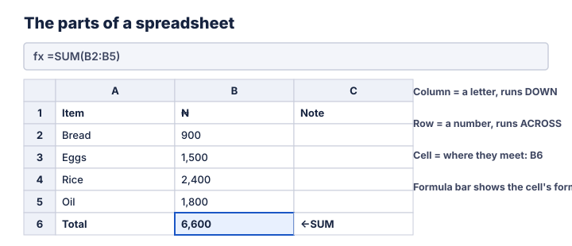

Use everything from the term again on one real job: collect, organise, calculate, chart, share safely and back up.
Next Generation Genius · Year 1 · Foundation
This project uses every earlier week again. Go back to your notes from weeks 2, 6 and 11 before you start.
Your project needs:
The panel will ask about YOUR choices: why that format, why that chart, how it is backed up. That is how they know the work is yours.

Need a hand? Use the checklist above as your plan: tick each line as you finish it.
Done early? Add a second sheet that summarises the first with COUNTIF and AVERAGE, and a second chart.
Your work is marked against the rubric, and you may be asked to explain your choices. Show your own thinking.